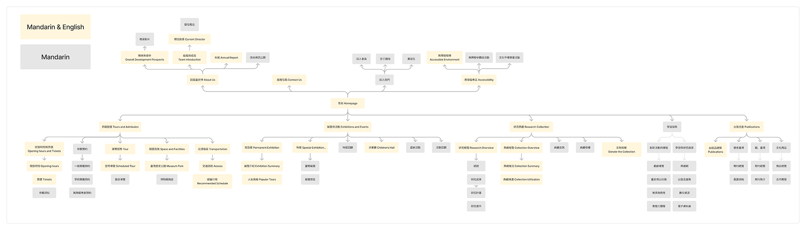
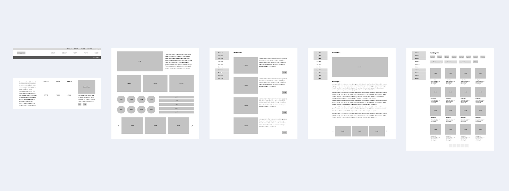
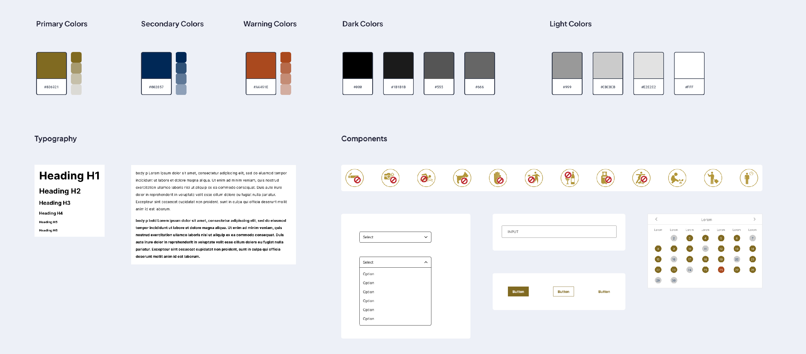

Wireframing | Information Architecture | Responsive Web Design | Development
This is the website made for National Museum of Taiwan History.
National Museum of Taiwan History is a museum covering the history of the island nation of Taiwan and its associated islands.
I designed multi-page responsive website using HTML5. The website design accepted the Web Content Accessibility Guidelines 2.1 and approved by Ministry of Digital Affairs in Taiwan.
According to the user research from the museum that users most likely to use the website are those needing additional information for their on-site visit. These users are young families, individuals with accessibility needs, tour groups, school groups, and members.
The museum requires to centralize important visitor information for these specific groups and to build on the backend management system with Taiwan ministry of culture.
Based on the backend management system, we have to sparingly design page templates and various elements that can address to most information the museum provided.
We want to visitors to quickly access the information they need, while optimizing usability.
We had discussed sessions with the museum to confirm their goals for the site, determine necessary pages, and discuss the overall user experience.
The insights we gathered guided initial site map in Mandarin and English, limited by the english information the museum provided, we chose the important pages of each section.
We sketches the wireframe and components to continue refining the UX and information architecture of the site.
 When the user link to the Home page, there is a sub menu on the top, appearing the necessary information for visitors, such as opening hour, tickets, and transportation. Furthermore, the navigation links are universally displayed for easy browsing of all of the content.
Based on the mobile phone user experience, we designed the navigation into the drop down menu, the user could check every item by clicking the item.
It's the first time that I have to design the website based on the existing backend system. Accordingly, I need to figure out the system, and cooprated closely with the engineers to build the website.
I learned so much about different collaboration methods, and how I can go about creating a guidelines document for the project.